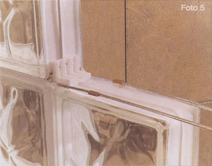
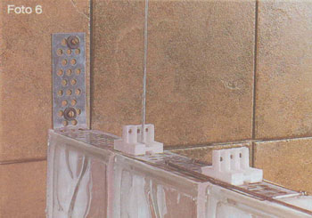
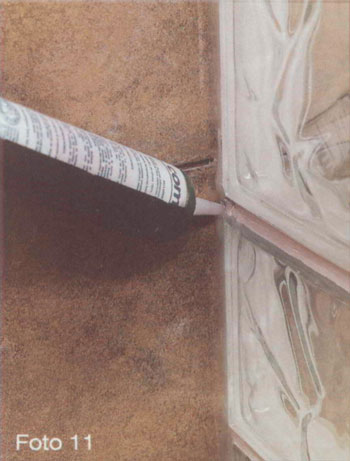

Instalação de
Ao instalar bloco de vidro surgem dois obstáculos principais a vencer para conseguir uma instalação adequada.
Os panéis que são formados com bloco de vidro não são estruturais e uma carga de vento ou de outro tipo pode afetá-los.
Devido aos movimentos de dilatação das construções e pela mesma natureza do vidro, o vidroblock passa de uma fase elástica a uma de ruptura sem passar por uma fase plástica intermediária, típica de outros materiais de construção como produtos de cimento, argila ou metais.

Creaciones Prácticas lhe oferece este guia de instalação, instaprac, na que lhe mostramos como se instala o bloco de vidro usando os materiais necessários para:
- Conseguir painéis de bloco de vidro com uma estrutura que resista às diferentes cargas que poderiam agir sobre o painel.
- Conseguir painéis de bloco de vidro onde se possa amortecer as tensões de ruptura nos bloco de vidro, provocadas pelos movimentos de dilatação da construção.
A foto 1 mostra um painel de bloco de vidro, instalado e finalizado com produtos de Creaciones Prácticas.
A foto 2 mostra os seis produtos para instalação do bloco de vidro:
- Anclaprac: Lâmina galvanizada para ancorar o painel de bloco de vidro nas paredes laterais e no teto.
- Viseprac: Separador, que como seu nome indica, serve para conseguir uma separação adequada entre bloco de vidro e que se possa distribuir nesses espaços a argamassa que cola os bloco de vidro.
- Expaprac: Tira de expansão pra amortecer as tensões de ruptura nos painéis de bloco de vidro.
- Alamprac: Arame galvanizado que é utilizado verticalmente para dar suporte e estrutura aos panéis de bloco de vidro.
- Unionprac: Uniões de cobre que são utilizadas para unir os extremos dos sopopracs e dos alampracs.
- Sorporprac: Escada de arame galvanizado que é utilizada horizontalmente para dar suporte e estrutura aos painéis de bloco de vidro.


A foto 3 mostra um painel de bloco de vidro em processo de instalação, usando os productos de Creaciones Prácticas.
A primeira fileira de bloco de vidro do painel é colada com argamassa no piso para nivelar os bloco de vidro do painel assegure-se de batê-los com algum martelo de cabeça de plástico já que uma ferramenta metálica pode causar fraturas no bloco de vidro que vão ser visíveis tempo depois.
Para dar suporte e uma estrutura integral ao painel, no mínimo em cada 2 fileiras do painel, instale o soporprac, e no mínimo em cada 2 filas do painel instale o alamprac. Para ancorar o alamprac no piso, perfure o piso com broca de cimento um buraco de em torno de 10 cm. de profundidade e introduza aí o alamprac e embebede-o com a argamassa no buraco.
O viseprac é instalado em cada intersecção de bloco de vidro, seu lado oco sempre é colocado em posição horizontal e seu outro lado com 6 orifícios em posição vertical tal como se mostra na foto 4.


O unionprac une os extremos dos soporprac quando a largura do painel é maior que a largura do soporprac, como se mostra na foto 5.
Usando uma pinça de pressão, aperte o unionprac na borda e forme uma espécie de linha de pressão que embona as pontas dos arames a serem unidos.
O alamprac também pode ser unido com os unionpracs.
Se o bloco de vidro que começa na parede lateral é peça completa, o anclaprac é dobrado em 90 graus na posição marcada, assim como se mostra na foto 6.
O anclaprac, em sua parte horizontal, se deve colocar sobre os bloco de vidro deixando passar os primeiros 2 visepracs colados no paredes por seus 2 buracos grandes.
A parte vertical da âncora, como seu nome indica, se ancora no parede usando duas buchas e parafusos.
Se o bloco de vidro que começa na parede lateral, é uma peça cortada, o anclaprac deve ser dobrado em 90 graus onde se permita que os 2 primeiros visepracs colados na parede se acomodem nos 2 buracos grandes do anclaprac.


Firme o soporprac no anclaprac introduzindo no máximo 1 cm. nos extremos do soporprac nos ganchos do anclaprac tal como se mostra na foto 7.
Para que os movimentos de dilatação da construção não afetem o bloco de vidro, se deve deixar um espaço entre o painel e as paredes laterais e entre o painel e o teto. Neste espaço se coloca o expaprac, material esponjoso que amortece as tensões de ruptura provocadas por esses movimentos de dilatação.
Sobre a parte vertical do anclaprac se cola o expaprac utilizando silicone como se mostra na foto 8. O expaprac vem cortado em tiras de 40 cm. para instalações de soporprac e anclaprac em cada 2 fileiras. Para instalações de soporprac e anclaprac em cada fileira, corte o expaprac na metade.
É muito importante que o exprapac seja colocado em toda a largura das paredes laterais e no teto do painel.


Como o viseprac que é colado na parede não cabe, corte um de seus lados e utilize-o em seu lugar assim como se mostra na foto 9.
Em cada fileira já colada, entre cada 2 visepracs coloque argamassa para receber o bloco de vidro da seguinte fileira tal como se mostra na foto 10.
No bloco de vidro que é colado na parede, não se coloca argamassa em seu lado vertical. Em todos os demais blocos de vidro da fileira a serem colados, é colocada argamassa no lado que vai ficar em contato em seu lado vertical com o bloco de vidro anterior, recém-colado.
Limpe o excesso de argamassa da superfície dos blocos de vidro, e usando uma boquilha anti-fungos, da cor que você escolha coloque boquilha em todas as juntas, deixando boquilhas listas e uniformes.


Não use argamassa para colar o bloco de vidro nas paredes laterais e no teto.
A borda dos blocos de vidro colados na parede deve ser preenchida com silicone. Assim como se mostra na foto 11.
Antes que o silicone seque, distribua-o perfeitamente na borda deixando um acabamento liso e uniforme.
Continue instalando as fileiras de bloco de vidro até chegar ao teto.
Se a última fileira de blocos de vidro que pega no teto não cabe no espaço resultando se têm 2 opções para terminar.
Se podem cortar os blocos de vidro dessa fileira com uma cortadora de água para azulejo na medida requerida pra que caibam, ou se pode baixar um parede do teto à última fileira de blocos de vidro do painel.
Não firme o alamprac no teto. O extremo do alamprac colado no teto somente fica flutuando na argamassa.
Não instale o anclaprac na última fileira do bloco de vidro colado no teto, mas sim instale o expaprac entre os blocos de vidro desta fileira e o teto.
Não cole com argamassa esta última fileira de blocos de vidro no teto, termine com silicone na borda desta fileira, cuidando para estender o silicone uniformemente antes que se seque.

Comentários finais
Não se recomenda instalar painéis de mais de 3,3 m. de largura por 3,3 m. de altura ou painéis com mais de 10 metros quadrados.
Se o painel é maior que as medidas anteriores, utilize uma coluna de suporte de concreto ou de aço que divida o painel no espaço recomendado, e instale o bloco de vidro que cola nesse suporte como se fosse uma parede lateral ou teto, segundo seja o caso.
Ao serem os soporpracs e alampracs de arame galvanizado, o anclaprac de lâmina galvanizada e os unionpracs de cobre, se evita que estes produtos enferrujem e cheguem a manchar a argamassa branca das boquilhas.
O viseprac permite por seu lado horizontal oco e por seus orifícios do lado vertical, que a argamassa atravesse, formando-se uma espécie de pregos de cimento que evitam que se forme um oco sem argamassa que debilita a estrutura do painel.
Nunca use os panéis de blocos de vidro como paredes viga.
Em instalações curvas, utilize o soporprac onde se permita a curvatura do painel, e onde não, usar em seu lugar 2 alampracs, os quais podem ser flexionados à curvatura desejada.
Como argamassa podem utilizar o denominado adesivo piso sobre piso e como boquilha, a denominada boquilha anti-fungos, que os fornecedores de adesivos de pisos e azulejos oferecem no mercado.
Quando por desenho, um painel de blocos de vidro começa em uma parede mas não chega a outra parede, se pode terminar a borda de várias formas. Usando um acabamento de madeira, ou usando peças de piso ou azulejo cerâmico, mármore ou granito, cortadas na largura e comprimento do bloco de vidro com remates de plástico ou alumínio (tiraprac). Ao não ter sustentação de anclaprac em ambos os lados do painel, nestes painéis não há garantia de instalação.